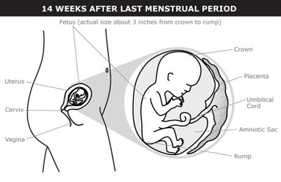

©copy writed by Group II
Your 2nd trimester begins during your 4th month of pregnancy, starting on week 14.
The fetus has a CRL of about 3 inches (8 cm).
The biological sex of the fetus can sometimes be seen by looking at external sex organs on an ultrasound.
Hair begins to grow.
The prostate gland begins developing in biologically male fetuses.
Ovaries move down from the abdomen to the pelvic area in biologically female fetuses.
The roof of the mouth is formed.

The fetus has a CRL of about 4.5 inches (12 cm).
Hundreds of thousands of eggs form in the ovaries of biologically female fetuses
Some of the early signs and symptoms of pregnancy go away when you’re 4 months pregnant. Nausea usually lessens. But other digestive problems — like heartburn and constipation — may be troublesome. Breast changes — growth, soreness, and darkening of the areola — usually continue. It’s common to have shortness of breath or to breathe faster. Increased blood flow may lead to unpleasant pregnancy symptoms, such as bleeding gums, nosebleeds, or nasal stuffiness. You also may feel dizzy or faint because of changes in your blood and blood vessels.
©copy writed by Group II